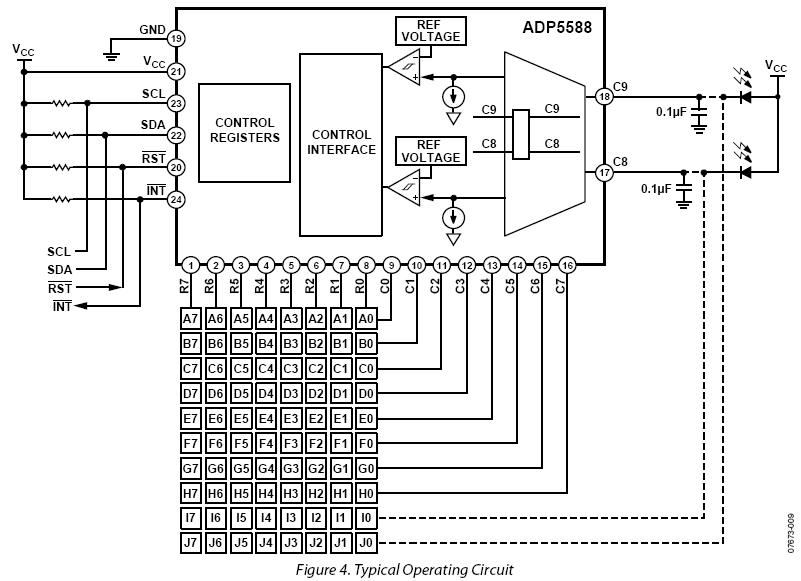
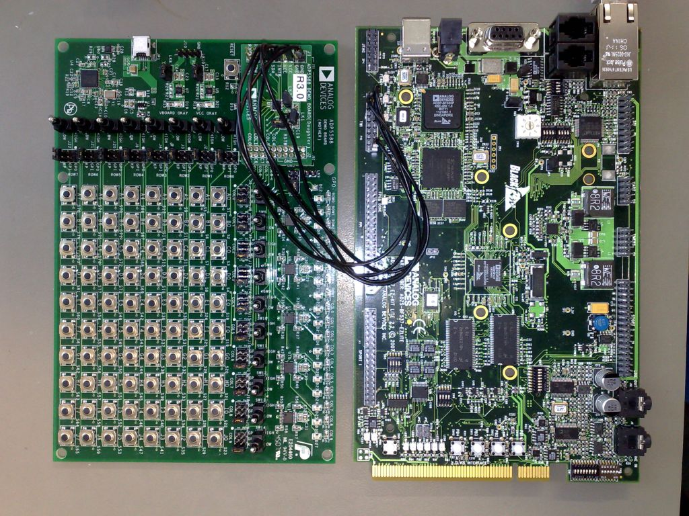

ADP5588 Input Keyboard and GPIO Linux Driver#
Supported Devices#
Evaluation Boards#
Description#
{kind=link}
The driver supports multiple key press detection and resolution. It independently delivers key press and key release events in chronological order to the Linux input device system. This allows SHIFT + ANYKEY, ALT + F1 or CTRL + ALT + DEL sequences. Since the ADP5588 buffers events in its internal FIFO, it’s unlikely that events are lost due to heavy system load and interrupt latencies.
Configuration#
Software configurable features#
Configurable keypad size matrix (rows, columns).
Support for switch events.
Enabling and disabling automatic key repeat feature.
Lock/Unlock key feature.
Unused row and column pins are exported general-purpose inputs/outputs to GPIOLIB
Source Code#
Status#
| Source | Mainlined? |
|---|---|
| git | Yes |
Files#
| Function | File |
|---|---|
| driver | drivers/input/keyboard/adp5588-keys.c |
| include | include/linux/i2c/adp5588.h |
Example platform device initialization#
For compile time configuration, it’s common Linux practice to keep board- and application-specific configuration out of the main driver file, instead putting it into the board support file.
Declaring I2C devices#
Unlike PCI or USB devices, I2C devices are not enumerated at the hardware level. Instead, the software must know which devices are connected on each I2C bus segment, and what address these devices are using. For this reason, the kernel code must instantiate I2C devices explicitly. There are different ways to achieve this, depending on the context and requirements. However the most common method is to declare the I2C devices by bus number.
This method is appropriate when the I2C bus is a system bus, as in many embedded systems, wherein each I2C bus has a number which is known in advance. It is thus possible to pre-declare the I2C devices that inhabit this bus. This is done with an array of struct i2c_board_info, which is registered by calling i2c_register_board_info().
So, to enable such a driver one need only edit the board support file by adding an appropriate entry to i2c_board_info.
For more information see: Documentation/i2c/instantiating-devices.rst
static struct i2c_board_info __initdata bfin_i2c_board_info[] = {
## if defined(CONFIG_KEYBOARD_ADP5585) || defined(CONFIG_KEYBOARD_ADP5585_MODULE)
{
I2C_BOARD_INFO("adp5585-keys", 0x34),
.irq = IRQ_PG0,
.platform_data = (void *)&adp5585_kpad_data,
},
## endif
}
Adding Linux driver support#
Configure kernel with “make menuconfig” (alternatively use “make xconfig” or “make qconfig”)
--- Input Device Support
<*> Generic input layer (needed for keyboard, mouse, ...)
< > Support for memoryless force-feedback devices
--- Userland interfaces
< > Mouse interface
< > Joystick interface
< > Touchscreen interface
<M> Event interface
< > Event debugging
--- Input Device Drivers
** [*] Keyboards --->**
--- Keyboards
< > AT keyboard
< > Sun Type 4 and Type 5 keyboard
< > DECstation/VAXstation LK201/LK401 keyboard
< > XT keyboard
< > Newton keyboard
< > Stowaway keyboard
< > GPIO Buttons
< > OpenCores Keyboard Controller
** <M> ADP5588 I2C QWERTY Keypad and IO Expander**
[ ] Mouse --->
[ ] Joysticks --->
[ ] Touchscreens --->
[ ] Miscellaneous devices --->
Hardware I/O ports --->
Note
Make sure the I2C SCL Clock is in the range of 60-400 kHz!
Hardware configuration#
{kind=link}
There is no dedicated Blackfin STAMP evaluation board for the ADP5588. During test and driver development we used the ADP5588 Demo Mother/Daughter Board.
It can be easily wired to the Blackfin STAMP TWI/I2C header.
| BF537-STAMP (P10) TWI/I2C header | ADP5588 Daughter Board | |
|---|---|---|
| PIN | Function | PIN/Function |
| 2 | (+3.3V) | VCC |
| 5 | SCL | SCL |
| 6 | SDA | SDA |
| 10 | PORTG0 | INTB |
| 20 | GND | GND |
Note
On the ADP5588 Demo Mother Board replace R30 (10kOhm PULL-UP resistor on /INTB strobe) with a 1-3kOhm resistor. The 10kOhm resistor is too weak - Blackfin might see an additional falling edge interrupt on the rising edge of /INTB.
Driver testing#
When the driver is loaded, you should see positive output that it found the ADP5588 device.
root:/> **modprobe adp5588_keys**
**input: adp5588-keys as /class/input/input0**
**adp5588-keys 0-0034: Rev.2 keypad, irq 66**
root:/> **modprobe evdev**
root:/> **event_test /dev/input/event0**
Input driver version is 1.0.0
Input device ID: bus 0x18 vendor 0x1 product 0x1 version 0x2
Input device name: "adp5588-keys"
Supported events:
Event type 0 (Reset)
Event code 0 (Reset)
Event code 1 (Key)
Event type 1 (Key)
Event code 1 (Esc)
Event code 2 (1)
Event code 3 (2)
Event code 4 (3)
Event code 5 (4)
Event code 6 (5)
Event code 7 (6)
Event code 8 (7)
Event code 9 (8)
Event code 10 (9)
Event code 11 (0)
Event code 12 (Minus)
Event code 13 (Equal)
Event code 14 (Backspace)
Event code 15 (Tab)
Event code 16 (Q)
Event code 17 (W)
Event code 18 (E)
Event code 19 (R)
Event code 20 (T)
Event code 21 (Y)
Event code 22 (U)
Event code 23 (I)
Event code 24 (O)
Event code 25 (P)
Event code 26 (LeftBrace)
Event code 27 (RightBrace)
Event code 28 (Enter)
Event code 30 (A)
Event code 31 (S)
Event code 32 (D)
Event code 33 (F)
Event code 34 (G)
Event code 35 (H)
Event code 36 (J)
Event code 37 (K)
Event code 38 (L)
Event code 39 (Semicolon)
Event code 40 (Apostrophe)
Event code 41 (Grave)
Event code 43 (BackSlash)
Event code 44 (Z)
Event code 45 (X)
Event code 46 (C)
Event code 47 (V)
Event code 48 (B)
Event code 49 (N)
Event code 50 (M)
Event code 51 (Comma)
Event code 52 (Dot)
Event code 53 (Slash)
Event code 57 (Space)
Event code 71 (KP7)
Event code 72 (KP8)
Event code 73 (KP9)
Event code 74 (KPMinus)
Event code 75 (KP4)
Event code 76 (KP5)
Event code 77 (KP6)
Event code 79 (KP1)
Event code 80 (KP2)
Event code 81 (KP3)
Event code 82 (KP0)
Event code 83 (KPDot)
Event code 86 (102nd)
Event code 96 (KPEnter)
Event code 103 (Up)
Event code 105 (Left)
Event code 106 (Right)
Event code 108 (Down)
Event code 111 (Delete)
Testing ... (interrupt to exit)
Event: time 219561.256000, type 1 (Key), code 41 (Grave), value 1
Event: time 219561.256000, type 0 (Reset), code 0 (Reset), value 0
Event: time 219561.464000, type 1 (Key), code 41 (Grave), value 0
Event: time 219561.464000, type 0 (Reset), code 0 (Reset), value 0
Event: time 219561.968000, type 1 (Key), code 2 (1), value 1
Event: time 219561.968000, type 0 (Reset), code 0 (Reset), value 0
Event: time 219562.176000, type 1 (Key), code 2 (1), value 0
Event: time 219562.176000, type 0 (Reset), code 0 (Reset), value 0
Event: time 219562.608000, type 1 (Key), code 3 (2), value 1
Event: time 219562.608000, type 0 (Reset), code 0 (Reset), value 0
Event: time 219562.868000, type 1 (Key), code 3 (2), value 0
Event: time 219562.868000, type 0 (Reset), code 0 (Reset), value 0
Event: time 219563.628000, type 1 (Key), code 4 (3), value 1
Event: time 219563.628000, type 0 (Reset), code 0 (Reset), value 0
Event: time 219563.888000, type 1 (Key), code 4 (3), value 0
Event: time 219563.888000, type 0 (Reset), code 0 (Reset), value 0
More Information#
Linux-Input mailing list: linux-input@vger.kernel.org
Need Help?